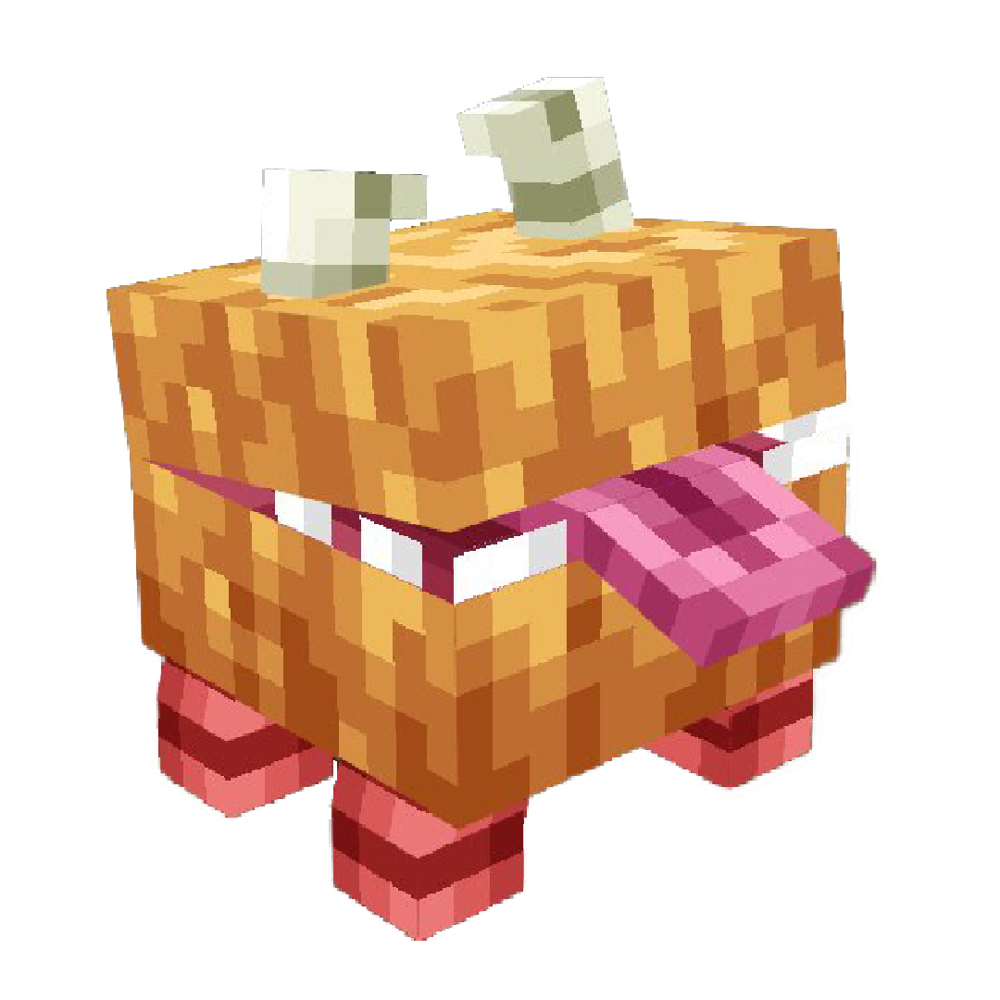
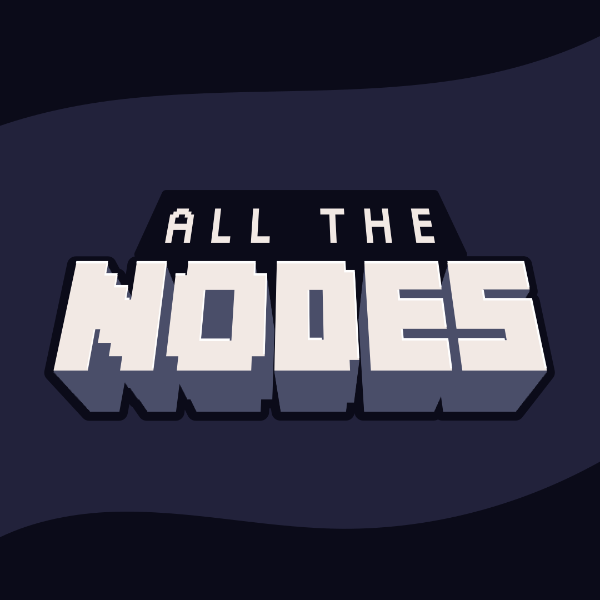

PROJECTS
CRIF also know as "Create an Empire of Rats to fight Ice & Fire" is a 1.16.5 modpack, it was our first modpack and also our biggest success. It was meant for those who want automation without having to give up adventure. This "lightweight" modpack focuses on 3 main mods, Create, Rats and Ice & Fire. For a balanced experience between adventure, building and automation. There was also an eye on cuteness.
All The Nodes is a 1.16.5 modpack built around the Create Automated mod that adds nodes, blocks from which resources can be extracted with the aid of a drill. Another key component was to create nodes through the miniaturization field of compact crafting.
Unfortunately the create automated has been discontinued and so this modpack, unfortunately we cannot update the modpack to 1.18+ until TYPz or zGraund will dedicate themselves to porting the mod to more recent versions.
(We still have no idea when this will be possible).
 This 1.18 modpack aims to improve your minecraft expirience without upsetting the minecraft style. What does it means? There are no mods that add new blocks or new mobs but only mods that improve existing Minecraft features
For example a mod that perfectly fits this description is the Amplified Nether mod that doesn't add any blocks or mob but it just improves the Nether generation.
This 1.18 modpack aims to improve your minecraft expirience without upsetting the minecraft style. What does it means? There are no mods that add new blocks or new mobs but only mods that improve existing Minecraft features
For example a mod that perfectly fits this description is the Amplified Nether mod that doesn't add any blocks or mob but it just improves the Nether generation.
Another good example of a mod that doesn't add anything but improves the minecraft expirience is the Immersive Portal mod
This mod makes see through portals and go through portals seamlessly without loading screen.